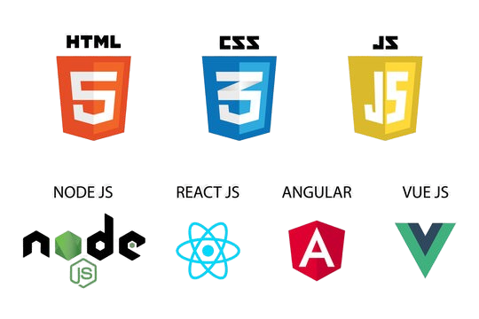

About Me
I’m a passionate and driven tech enthusiast currently exploring the world of web development. My journey into tech started with a simple curiosity — how do websites work? That curiosity quickly turned into a deep interest in understanding how technology powers our digital world. As part of my growth, I’ve started learning and working with the core pillars of web development — HTML, CSS, and JavaScript. These technologies have allowed me to build dynamic and engaging webpages from scratch, and every new concept I learn opens up more possibilities to express creativity through code. Currently, I’m doing a hands-on web development internship where I apply these skills to real-world tasks, learning the best practices for clean code, responsive design, and interactive elements. I enjoy experimenting with new layouts, styles, and JavaScript logic to make websites not just functional, but also enjoyable to use. Beyond coding, I have a genuine interest in user experience and visual design. I believe a good website doesn’t just work well — it should also feel intuitive and look appealing. This mindset motivates me to continually improve my skills in front-end technologies and eventually explore backend tools and full-stack development. I also value self-growth, teamwork, and continuous learning. Whether it's debugging an issue, trying out a new framework, or reading about tech trends, I’m always eager to challenge myself and expand my knowledge. My ultimate goal is to become a skilled developer who builds solutions that help people, solve problems, and bring ideas to life on the web. I'm excited about the path ahead — and this is just the beginning.
What is Html, Css and JavaScript...??
HTML
HTML (HyperText Markup Language) is the standard markup language used to create web pages. It organizes content like titles, text, images, and buttons in a structured format. Every element in HTML is wrapped in tags to give it meaning and purpose. Think of HTML as the skeleton or structure of a webpage.
DOCTYPE html – Declares the document type and version of HTML being used. It helps browsers render the page correctly.
"html"– The root element that wraps all other HTML content on the page.
"head" – Contains metadata like the page title, links to stylesheets, and scripts. It’s not visible to the user.
body – Holds all the content that is displayed on the webpage, like text, images, buttons, etc.
h1 to h6 – Represent headings.h1is the largest and most important, while h6 is the smallest.
p – Used to define a paragraph of text.
img src="..." alt="..." – Displays an image. The src attribute holds the image link, and alt provides a description if the image doesn’t load.
a href="..." – Creates a hyperlink that users can click to visit another webpage or section.
"button" – Creates a clickable button that can be used with JavaScript for interactivity.
"br" – Inserts a line break. Useful for moving content to the next line.
"hr" – Adds a horizontal line to separate content sections.
"ul" – Defines an unordered (bulleted) list.
"ol" – Defines an ordered (numbered) list.
"li" – Represents a list item inside ul or ol.
"div" – A generic container used to group elements together. Useful for layout and styling.
"span" – An inline container used to style a specific part of text.
Css
CSS stands for Cascading Style Sheets. It is a stylesheet language used to describe the presentation and design of an HTML document.CSS is used to style and layout web pages — for example, to change colors, fonts, spacing, positions, and even animations.It separates content (HTML) from design (CSS), which makes websites easier to manage and update.CSS makes web pages visually attractive and user-friendly by controlling how HTML elements appear on different screen sizes and devices.
"color" – Sets the text color of an element.
"background-color" – Sets the background color of an element.
"font-size" – Controls the size of the text.
"font-family" – Changes the font style (e.g., Arial, Times New Roman).
"text-align" – Aligns text horizontally (left, right, center, justify).
"margin" – Adds space outside the element (like outer spacing).
"padding" – Adds space inside the element (between content and border).
"border" – Adds a border around an element and defines its thickness, style, and color.
"width" – Sets the width of an element.
"height" – Sets the height of an element.
display – Controls how an element is displayed (e.g., block, inline, flex).
position – Defines how an element is positioned (e.g., static, relative, absolute, fixed).
box-shadow – Adds shadow effects around an element’s box.
border-radius – Rounds the corners of an element’s border.
text-decoration – Changes text styling like underline, none, overline.
hover – A pseudo-class that applies styles when the mouse hovers over an element.
JavaScript
JavaScript is a programming language used to make web pages interactive and dynamic. While HTML provides the structure of a webpage and CSS is used for its design and layout, JavaScript allows the webpage to respond to user actions such as clicks, typing, scrolling, or form submissions. It can be used to change content on the page, show or hide elements, display messages, update data without refreshing the page, and much more. JavaScript runs directly in the web browser, making it possible to create real-time, interactive experiences for users. It works alongside HTML and CSS to enhance a website’s functionality and user engagement. For example, when you click a button and a popup appears or when a form warns you that a field is empty, that’s JavaScript in action. It is a lightweight and powerful language that supports complex features like animations, real-time updates, games, and communication with servers. JavaScript plays a major role in modern web development and is supported by all web browsers. Over time, it has also evolved to be used on the server-side through environments like Node.js, making it one of the most versatile and widely-used languages in the world of web development.
Learning Vibes
Learn More
Explore amazing more about Web Development at Wikipedia Wikipedia.
Try This
Contact Me
Explore me on LinkedIn Shubham Kumar.
GitHub
Explore me on Github Shub202.